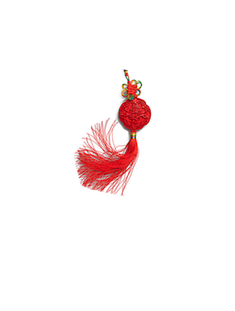
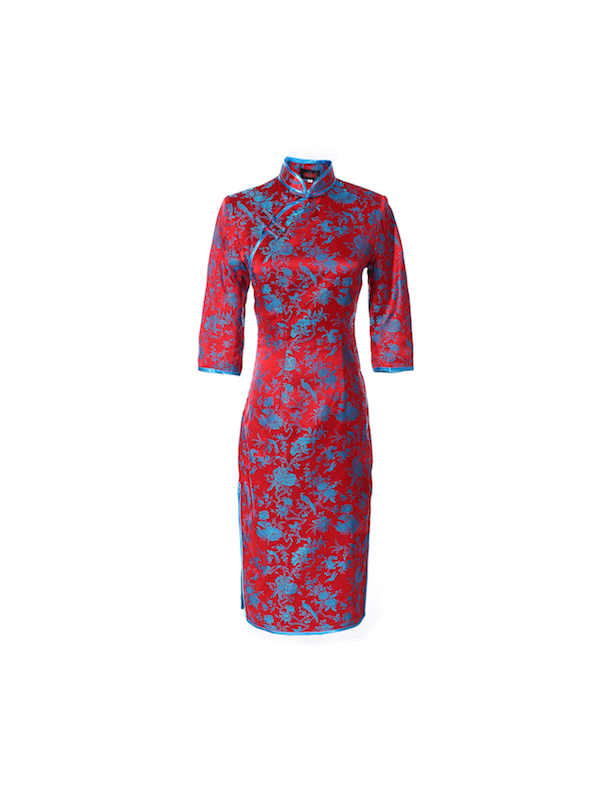
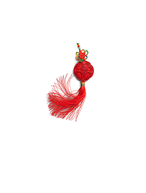
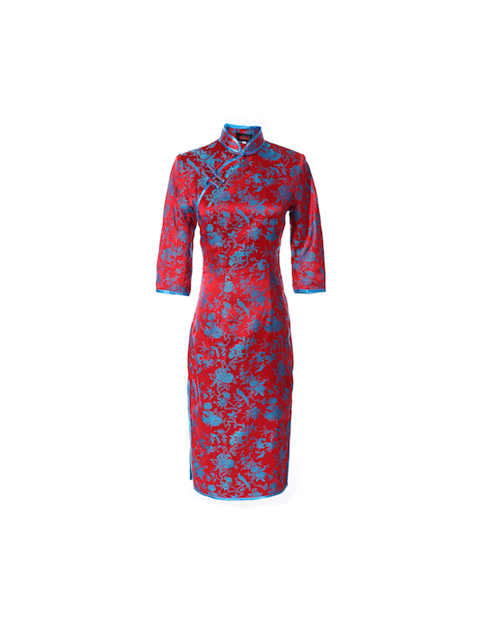

Hutong Tours
北京胡同游
北京胡同游
Old Beijing

A very nice place full of shops and modern bars. A must-see spot where one can feel the scent of old Beijing! Once you are in Beijing you should definitely visit this street!
Step back into the time of the Emperor”
I felt like I was transported back into an ancient dynasty! Definitely a must visit for lovers of Chinese culture. Incredibly authentic.
It is one of the best preserved areas in downtown Beijing, with more than 30 hip cafes, restaurants, clothing and handicraft shops.
Olympics
Souvenirs
For Sale  
“Love shopping along the commercial hutong street”
The Nanluoguxiang street is really fun to shop for Chinese culture. My wife loves the porcelain bowls we picked up, and I got a panda for my daughter. A great place to find souvenirs.
“Nice place for a taste of chinese culture”
This is a great place to try exotic foods, see really cool stores, buy nice souvenirs, etc. Try all the local snacks for a taste of Old Beijing.
"Great place to feel like a local"
It is new, exciting, and vibrant. Coming here has given me a taste of real Beijing. Make sure to pick up some souvenirs, I got a beautiful qipao to bring home.
For Sale  
The Nanluoguxiang street is really fun to shop for Chinese culture. My wife loves the porcelain bowls we picked up, and I got a panda for my daughter. A great place to find souvenirs.
This is a great place to try exotic foods, see really cool stores, buy nice souvenirs, etc. Try all the local snacks for a taste of Old Beijing.
It is new, exciting, and vibrant. Coming here has given me a taste of real Beijing. Make sure to pick up some souvenirs, I got a beautiful qipao to bring home.